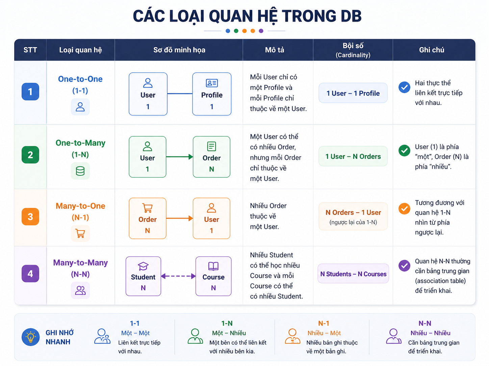
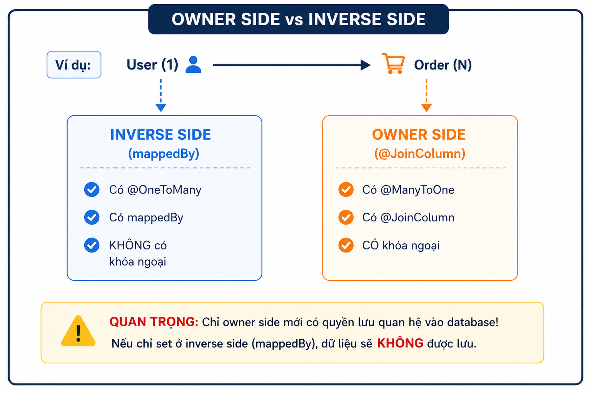
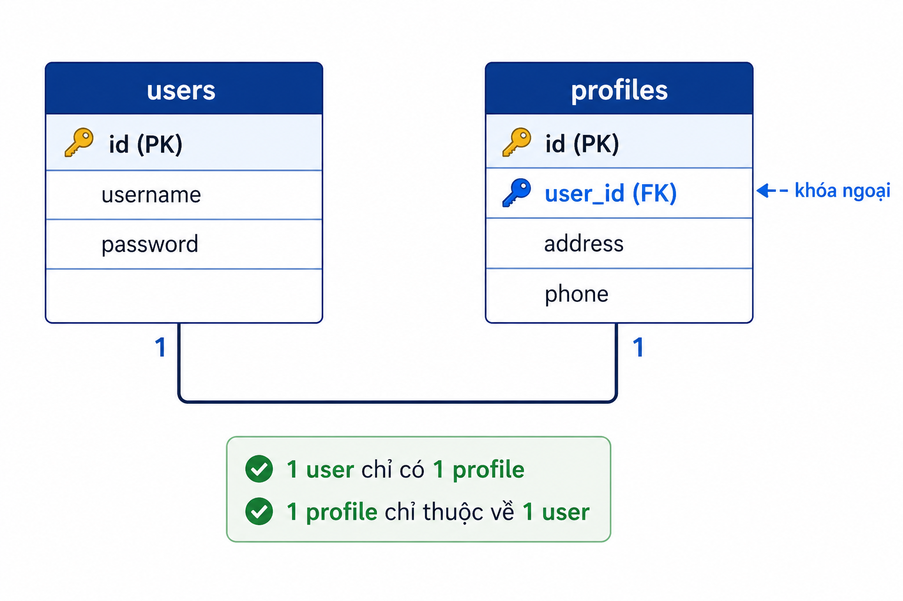
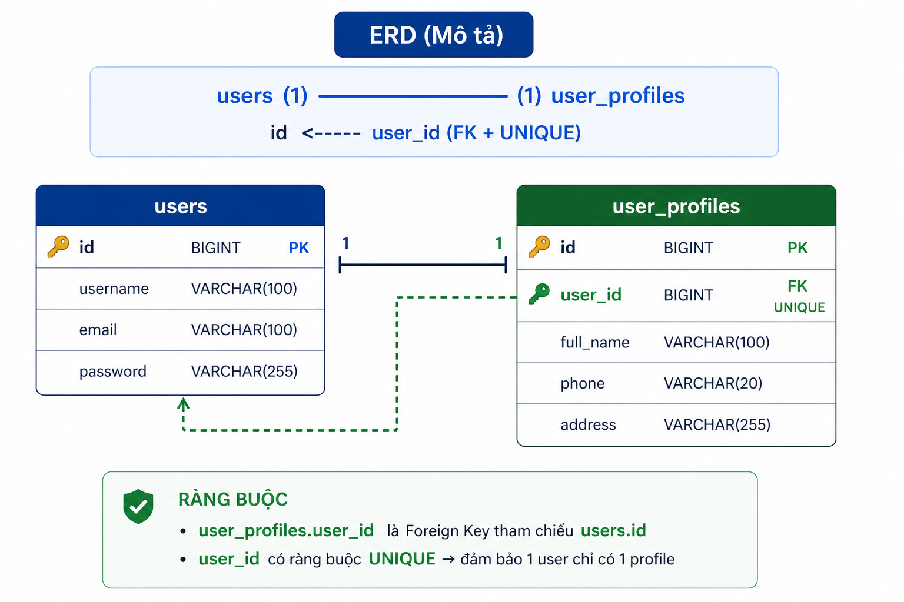
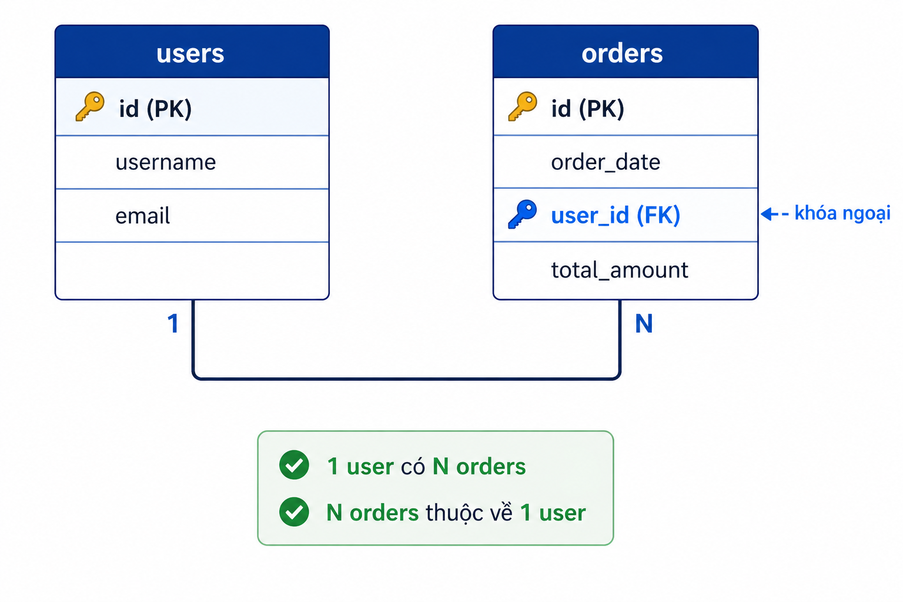
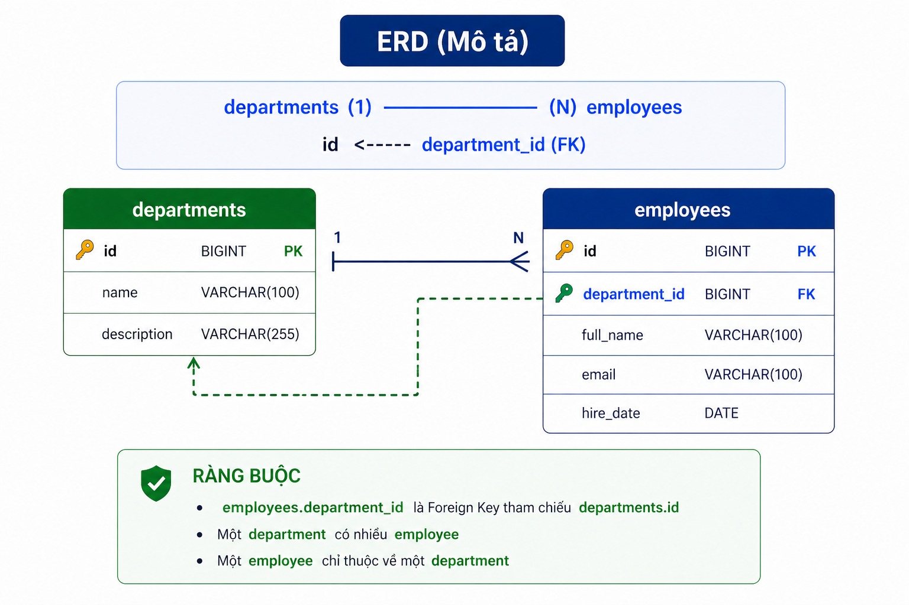
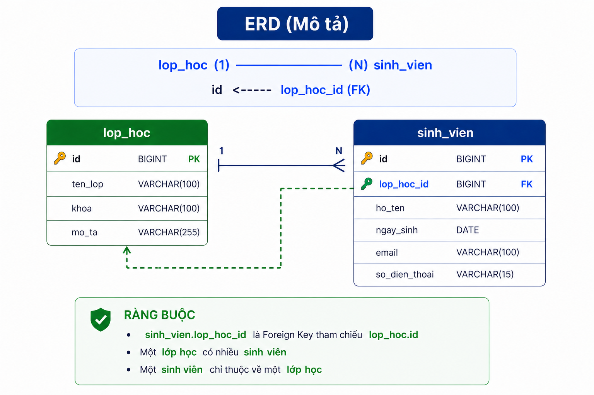
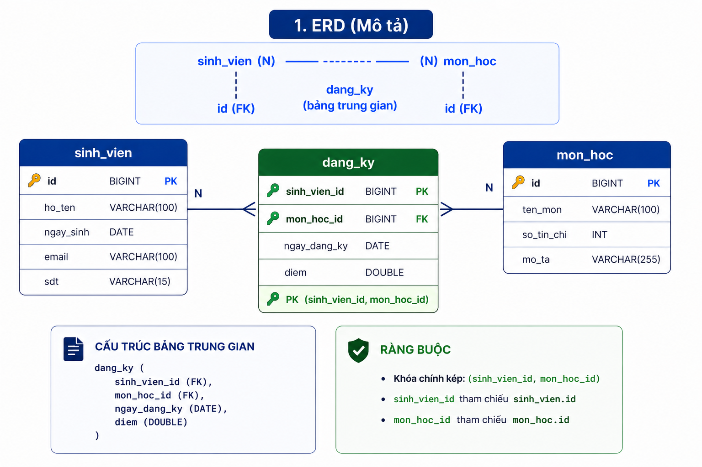
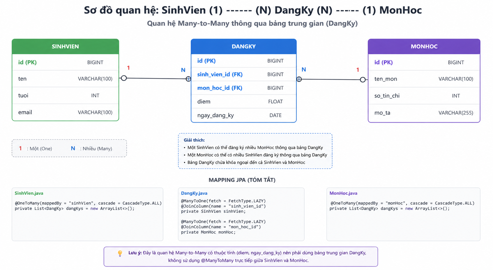

PHẦN 1: TỔNG QUAN VỀ QUAN HỆ TRONG JPA
1.1. Các loại quan hệ trong cơ sở dữ liệu
Trong thực tế, các bảng dữ liệu thường có quan hệ với nhau. Có 4 loại quan hệ chính:

1.2. Các annotation JPA dùng để đánh dấu quan hệ
| Annotation | Ý nghĩa | Sử dụng cho |
|---|---|---|
| @OneToOne | Quan hệ một-một | Cả 2 phía |
| @OneToMany | Quan hệ một-nhiều | Phía "một" |
| @ManyToOne | Quan hệ nhiều-một | Phía "nhiều" |
| @ManyToMany | Quan hệ nhiều-nhiều | Cả 2 phía |
| @JoinColumn | Chỉ định cột khóa ngoại | Bên sở hữu quan hệ |
| @JoinTable | Bảng trung gian cho N-N | Cả 2 phía |
| mappedBy | Bên không sở hữu quan hệ | Phía không có khóa ngoại |
1.3. Khái niệm quan trọng: Owner side vs Inverse side

Nguyên tắc quan trọng:
- @ManyToOne luôn là bên giữ khóa ngoại (foreign key)
- @OneToMany đi kèm với mappedBy trỏ về phía @ManyToOne
- @ManyToMany cần bảng trung gian (@JoinTable)
PHẦN 2: QUAN HỆ ONE-TO-ONE (1-1)
2.1. Khái niệm và ví dụ thực tế
Một-một là quan hệ mà mỗi bản ghi ở bảng A liên kết với tối đa một bản ghi ở bảng B, và ngược lại.
Ví dụ thực tế:
- 1 người dùng (User) có 1 hồ sơ (Profile)
- 1 sản phẩm (Product) có 1 thông tin chi tiết (ProductDetail)
- 1 căn cước công dân (CitizenID) thuộc về 1 người (Person)

2.2. Công thức Entity 1-1 (JPA)
Nguyên tắc:
- Chỉ 1 bên giữ khóa ngoại (FK) → gọi là Owning side
- Bên còn lại dùng mappedBy
- FK phải có unique = true để đảm bảo đúng 1-1
One-to-One hai chiều (bidirectional)
public class A {
@Id
@GeneratedValue(strategy = GenerationType.IDENTITY)
private Long id;
@OneToOne(mappedBy = "a", cascade = CascadeType.ALL)
private B b;
public void setB(B b) {
this.b = b;
if (b != null && b.getA() != this) {
b.setA(this);
}
}
}
public class B {
@Id
@GeneratedValue(strategy = GenerationType.IDENTITY)
private Long id;
@OneToOne
@JoinColumn(name = "a_id", unique = true)
private A a;
}
Ghi nhớ nhanh:
- @JoinColumn luôn nằm ở Owning side
- mappedBy luôn nằm ở phía còn lại
- unique = true là bắt buộc để giữ đúng quan hệ 1-1
- Bên nào giữ khóa ngoại thì bên đó dùng @JoinColumn
2.3. Ví dụ Quan hệ One-to-One: User và UserProfile
Mô tả quan hệ
Mỗi User có một UserProfile.
Mỗi UserProfile thuộc về một User.
Đây là quan hệ One-to-One, được đảm bảo bằng UNIQUE trên khóa ngoại.
ERD (Mô tả)

Script tạo Database + Bảng
CREATE DATABASE user_management;
USE user_management;
-- Bảng users
CREATE TABLE users (
id BIGINT PRIMARY KEY AUTO_INCREMENT,
email VARCHAR(255) NOT NULL UNIQUE,
password VARCHAR(255)
);
-- Bảng user_profiles
CREATE TABLE user_profiles (
id BIGINT PRIMARY KEY AUTO_INCREMENT,
full_name VARCHAR(255),
phone VARCHAR(20),
address VARCHAR(255),
user_id BIGINT UNIQUE,
CONSTRAINT fk_user_profile FOREIGN KEY (user_id) REFERENCES users(id) ON DELETE CASCADE
);
Dữ liệu mẫu
INSERT INTO users (email, password) VALUES
('an@gmail.com', '123456'),
('binh@gmail.com', 'abcdef');
-- Thêm profiles
INSERT INTO user_profiles (full_name, phone, address, user_id) VALUES
('Nguyen Van An', '0123456789', 'Ha Noi', 1),
('Tran Van Binh', '0987654321', 'Hai Phong', 2);
Code Java (JPA Entity)
import javax.persistence.*;
@Entity
@Table(name = "users")
public class User {
@Id
@GeneratedValue(strategy = GenerationType.IDENTITY)
private Long id;
@Column(nullable = false, unique = true)
private String email;
private String password;
@OneToOne(mappedBy = "user", cascade = CascadeType.ALL, fetch = FetchType.LAZY)
private UserProfile profile;
public User() {}
public User(String email, String password) {
this.email = email;
this.password = password;
}
// Getters and Setters
public Long getId() { return id; }
public void setId(Long id) { this.id = id; }
public String getEmail() { return email; }
public void setEmail(String email) { this.email = email; }
public String getPassword() { return password; }
public void setPassword(String password) { this.password = password; }
public UserProfile getProfile() { return profile; }
public void setProfile(UserProfile profile) {
this.profile = profile;
if (profile != null && profile.getUser() != this) {
profile.setUser(this);
}
}
}
import javax.persistence.*;
@Entity
@Table(name = "user_profiles")
public class UserProfile {
@Id
@GeneratedValue(strategy = GenerationType.IDENTITY)
private Long id;
private String fullName;
private String phone;
private String address;
@OneToOne
@JoinColumn(name = "user_id", unique = true)
private User user;
public UserProfile() {}
public UserProfile(String fullName, String phone, String address) {
this.fullName = fullName;
this.phone = phone;
this.address = address;
}
// Getters and Setters
public Long getId() { return id; }
public void setId(Long id) { this.id = id; }
public String getFullName() { return fullName; }
public void setFullName(String fullName) { this.fullName = fullName; }
public String getPhone() { return phone; }
public void setPhone(String phone) { this.phone = phone; }
public String getAddress() { return address; }
public void setAddress(String address) { this.address = address; }
public User getUser() { return user; }
public void setUser(User user) { this.user = user; }
}
PHẦN 3: QUAN HỆ ONE-TO-MANY & MANY-TO-ONE (1-N & N-1)
3.1. Lý thuyết
Định nghĩa:
- @ManyToOne: Nhiều entity B thuộc về một entity A (bên nhiều giữ khóa ngoại)
- @OneToMany: Một entity A có nhiều entity B (bên một không giữ khóa ngoại)
Ví dụ thực tế:
- Category (1) - Product (N): Một danh mục có nhiều sản phẩm
- Department (1) - Employee (N): Một phòng ban có nhiều nhân viên
- Class (1) - Student (N): Một lớp có nhiều sinh viên

3.2. Công thức Entity 1-N (JPA)
Nguyên tắc:
- Quan hệ: 1 → N (một A có nhiều B)
- Khóa ngoại luôn nằm ở bảng "N" (many side)
- Owning side là phía "N" (nơi có @JoinColumn)
- Phía "1" dùng mappedBy
Cách chuẩn: Bidirectional (khuyên dùng)
public class A {
@Id
@GeneratedValue(strategy = GenerationType.IDENTITY)
private Long id;
@OneToMany(mappedBy = "a", cascade = CascadeType.ALL)
private List<B> listB;
// đồng bộ 2 chiều
public void addB(B b) {
listB.add(b);
b.setA(this);
}
}
public class B {
@Id
@GeneratedValue(strategy = GenerationType.IDENTITY)
private Long id;
@ManyToOne
@JoinColumn(name = "a_id")
private A a;
}
Ghi nhớ nhanh:
- @ManyToOne luôn là Owning side
- @JoinColumn nằm ở bảng N
- mappedBy nằm ở bảng 1
- "N giữ khóa ngoại"
3.2Ví dụ Quan hệ One-to-Many: Department và Employee
Mô tả quan hệ
Mỗi Department có nhiều Employee
Mỗi Employee thuộc về một Department
Đây là quan hệ One-to-Many, được đảm bảo bằng khóa ngoại department_id ở bảng employees
ERD (Mô tả)

Script tạo Database + Bảng
CREATE DATABASE company_management;
USE company_management;
-- Bảng departments (phía 1 - KHÔNG giữ khóa ngoại)
CREATE TABLE departments (
id BIGINT PRIMARY KEY AUTO_INCREMENT,
name VARCHAR(255) NOT NULL UNIQUE,
location VARCHAR(255)
);
-- Bảng employees (phía N - GIỮ khóa ngoại)
CREATE TABLE employees (
id BIGINT PRIMARY KEY AUTO_INCREMENT,
name VARCHAR(255) NOT NULL,
position VARCHAR(100),
salary DOUBLE,
department_id BIGINT,
CONSTRAINT fk_employee_department
FOREIGN KEY (department_id) REFERENCES departments(id)
ON DELETE SET NULL
);
Dữ liệu mẫu
INSERT INTO departments (name, location) VALUES
('IT Department', 'Hanoi'),
('HR Department', 'Ho Chi Minh');
-- Thêm employees (có department_id)
INSERT INTO employees (name, position, salary, department_id) VALUES
('Nguyen Van A', 'Java Developer', 1500.0, 1),
('Tran Thi B', 'Frontend Developer', 1200.0, 1),
('Le Van C', 'HR Specialist', 1000.0, 2);
Code Java (JPA Entity)
Department.java (phía 1 - KHÔNG giữ khóa ngoại)
import javax.persistence.*;
import java.util.ArrayList;
import java.util.List;
@Entity
@Table(name = "departments")
public class Department {
@Id
@GeneratedValue(strategy = GenerationType.IDENTITY)
private Long id;
@Column(nullable = false, unique = true)
private String name;
private String location;
// NOTE: @OneToMany đánh dấu quan hệ 1-N
// NOTE: mappedBy = "department" → trỏ đến tên field ở Employee
// NOTE: cascade = CascadeType.ALL → thao tác trên Department ảnh hưởng đến Employee
// NOTE: fetch = FetchType.LAZY → chỉ load employees khi thực sự cần
@OneToMany(mappedBy = "department", cascade = CascadeType.ALL, fetch = FetchType.LAZY)
private List<Employee> employees = new ArrayList<>();
public Department() {}
public Department(String name, String location) {
this.name = name;
this.location = location;
}
// NOTE: Helper method - đồng bộ cả 2 chiều khi thêm employee
public void addEmployee(Employee employee) {
employees.add(employee);
employee.setDepartment(this);
}
// NOTE: Helper method - đồng bộ cả 2 chiều khi xóa employee
public void removeEmployee(Employee employee) {
employees.remove(employee);
employee.setDepartment(null);
}
// Getters and Setters
public Long getId() { return id; }
public void setId(Long id) { this.id = id; }
public String getName() { return name; }
public void setName(String name) { this.name = name; }
public String getLocation() { return location; }
public void setLocation(String location) { this.location = location; }
public List<Employee> getEmployees() { return employees; }
public void setEmployees(List<Employee> employees) { this.employees = employees; }
}
Employee.java (phía N - GIỮ khóa ngoại)
import javax.persistence.*;
@Entity
@Table(name = "employees")
public class Employee {
@Id
@GeneratedValue(strategy = GenerationType.IDENTITY)
private Long id;
@Column(nullable = false)
private String name;
private String position;
private Double salary;
// NOTE: @ManyToOne đánh dấu quan hệ N-1
// NOTE: fetch = FetchType.LAZY → chỉ load department khi cần
// NOTE: @JoinColumn chỉ định tên cột khóa ngoại
@ManyToOne(fetch = FetchType.LAZY)
@JoinColumn(name = "department_id")
private Department department;
public Employee() {}
public Employee(String name, String position, Double salary) {
this.name = name;
this.position = position;
this.salary = salary;
}
// Getters and Setters
public Long getId() { return id; }
public void setId(Long id) { this.id = id; }
public String getName() { return name; }
public void setName(String name) { this.name = name; }
public String getPosition() { return position; }
public void setPosition(String position) { this.position = position; }
public Double getSalary() { return salary; }
public void setSalary(Double salary) { this.salary = salary; }
public Department getDepartment() { return department; }
public void setDepartment(Department department) { this.department = department; }
}
Giải thích chi tiết
@OneToMany(mappedBy = "department")
| Thành phần | Giải thích |
|---|---|
| mappedBy = "department" | Trỏ đến tên biến department trong class Employee |
| Ý nghĩa | "Hãy nhìn vào phía Employee để biết khóa ngoại" |
| Hậu quả nếu thiếu | Tạo bảng trung gian (join table) thay vì dùng khóa ngoại |
@ManyToOne + @JoinColumn
| Thành phần | Giải thích |
|---|---|
| @ManyToOne | Đánh dấu quan hệ N-1 |
| @JoinColumn(name = "department_id") | Tạo cột department_id trong bảng employees |
| Khóa ngoại | Tham chiếu đến departments.id |
FetchType.LAZY
| Vị trí | Giá trị mặc định | Lý do |
|---|---|---|
| @OneToMany | LAZY | Tránh load toàn bộ danh sách employees |
| @ManyToOne | EAGER | Nên set thành LAZY để tối ưu |
Helper methods (addEmployee, removeEmployee)
employees.add(employee); // Thêm vào danh sách phía Department
employee.setDepartment(this); // Set ngược lại phía Employee
}
Tác dụng: Đảm bảo đồng bộ cả 2 chiều, tránh lỗi chỉ set một phía.
3.3. Ví dụ : Quản lý Lớp học và Sinh viên
Mô tả quan hệ
Mỗi Lớp học có nhiều Sinh viên
Mỗi Sinh viên thuộc về một Lớp học
Đây là quan hệ One-to-Many, được đảm bảo bằng khóa ngoại lop_hoc_id ở bảng sinh_vien
ERD (Mô tả)

Script tạo Database + Bảng
CREATE DATABASE school_management;
USE school_management;
-- Bảng lop_hoc (phía 1 - KHÔNG giữ khóa ngoại)
CREATE TABLE lop_hoc (
id BIGINT PRIMARY KEY AUTO_INCREMENT,
ma_lop VARCHAR(20) NOT NULL UNIQUE,
ten_lop VARCHAR(100) NOT NULL,
si_so_toi_da INT DEFAULT 30
);
-- Bảng sinh_vien (phía N - GIỮ khóa ngoại)
CREATE TABLE sinh_vien (
id BIGINT PRIMARY KEY AUTO_INCREMENT,
ma_sv VARCHAR(20) NOT NULL UNIQUE,
ho_ten VARCHAR(100) NOT NULL,
ngay_sinh DATE,
lop_hoc_id BIGINT,
CONSTRAINT fk_sinhvien_lophoc
FOREIGN KEY (lop_hoc_id) REFERENCES lop_hoc(id)
ON DELETE SET NULL
);
Dữ liệu mẫu
INSERT INTO lop_hoc (ma_lop, ten_lop, si_so_toi_da) VALUES
('IT2024A', 'Lập trình Java', 30),
('IT2024B', 'Lập trình Python', 25),
('BIZ2024', 'Quản trị kinh doanh', 40);
-- Thêm sinh viên
INSERT INTO sinh_vien (ma_sv, ho_ten, ngay_sinh, lop_hoc_id) VALUES
('SV001', 'Nguyễn Văn An', '2002-05-15', 1),
('SV002', 'Trần Thị Bình', '2002-08-20', 1),
('SV003', 'Lê Văn Cường', '2003-01-10', 1),
('SV004', 'Phạm Thị Dung', '2002-11-30', 2),
('SV005', 'Hoàng Văn Em', '2003-03-25', 2);
Code Java (JPA Entity) - Có giải thích chi tiết
LopHoc.java (phía 1 - KHÔNG giữ khóa ngoại)
import javax.persistence.*;
import java.util.ArrayList;
import java.util.List;
@Entity
@Table(name = "lop_hoc")
public class LopHoc {
@Id
@GeneratedValue(strategy = GenerationType.IDENTITY)
private Long id;
@Column(name = "ma_lop", nullable = false, unique = true)
private String maLop;
@Column(name = "ten_lop", nullable = false)
private String tenLop;
@Column(name = "si_so_toi_da")
private int siSoToiDa = 30;
// NOTE: @OneToMany đánh dấu quan hệ 1-N
// NOTE: mappedBy = "lopHoc" → trỏ đến tên field ở class SinhVien
// NOTE: cascade = CascadeType.ALL → thao tác trên LopHoc ảnh hưởng đến SinhVien
// NOTE: fetch = FetchType.LAZY → chỉ load danh sách sinh viên khi cần
@OneToMany(mappedBy = "lopHoc", cascade = CascadeType.ALL, fetch = FetchType.LAZY)
private List<SinhVien> sinhViens = new ArrayList<>();
public LopHoc() {}
public LopHoc(String maLop, String tenLop, int siSoToiDa) {
this.maLop = maLop;
this.tenLop = tenLop;
this.siSoToiDa = siSoToiDa;
}
// NOTE: Helper method - đồng bộ cả 2 chiều khi thêm sinh viên
public void addSinhVien(SinhVien sv) {
sinhViens.add(sv);
sv.setLopHoc(this);
}
// NOTE: Helper method - đồng bộ cả 2 chiều khi xóa sinh viên
public void removeSinhVien(SinhVien sv) {
sinhViens.remove(sv);
sv.setLopHoc(null);
}
// Getters and Setters
public Long getId() { return id; }
public void setId(Long id) { this.id = id; }
public String getMaLop() { return maLop; }
public void setMaLop(String maLop) { this.maLop = maLop; }
public String getTenLop() { return tenLop; }
public void setTenLop(String tenLop) { this.tenLop = tenLop; }
public int getSiSoToiDa() { return siSoToiDa; }
public void setSiSoToiDa(int siSoToiDa) { this.siSoToiDa = siSoToiDa; }
public List<SinhVien> getSinhViens() { return sinhViens; }
public void setSinhViens(List<SinhVien> sinhViens) { this.sinhViens = sinhViens; }
}
SinhVien.java (phía N - GIỮ khóa ngoại)
import javax.persistence.*;
import java.time.LocalDate;
@Entity
@Table(name = "sinh_vien")
public class SinhVien {
@Id
@GeneratedValue(strategy = GenerationType.IDENTITY)
private Long id;
@Column(name = "ma_sv", nullable = false, unique = true)
private String maSV;
@Column(name = "ho_ten", nullable = false)
private String hoTen;
@Column(name = "ngay_sinh")
private LocalDate ngaySinh;
// NOTE: @ManyToOne đánh dấu quan hệ N-1
// NOTE: fetch = FetchType.LAZY → chỉ load LopHoc khi thực sự cần (tối ưu hiệu năng)
// NOTE: @JoinColumn(name = "lop_hoc_id") → tạo cột khóa ngoại tên "lop_hoc_id"
@ManyToOne(fetch = FetchType.LAZY)
@JoinColumn(name = "lop_hoc_id")
private LopHoc lopHoc;
public SinhVien() {}
public SinhVien(String maSV, String hoTen, LocalDate ngaySinh) {
this.maSV = maSV;
this.hoTen = hoTen;
this.ngaySinh = ngaySinh;
}
// Getters and Setters
public Long getId() { return id; }
public void setId(Long id) { this.id = id; }
public String getMaSV() { return maSV; }
public void setMaSV(String maSV) { this.maSV = maSV; }
public String getHoTen() { return hoTen; }
public void setHoTen(String hoTen) { this.hoTen = hoTen; }
public LocalDate getNgaySinh() { return ngaySinh; }
public void setNgaySinh(LocalDate ngaySinh) { this.ngaySinh = ngaySinh; }
public LopHoc getLopHoc() { return lopHoc; }
public void setLopHoc(LopHoc lopHoc) { this.lopHoc = lopHoc; }
}
Giải thích chi tiết các thành phần
@OneToMany(mappedBy = "lopHoc")
| Thành phần | Giải thích |
|---|---|
| @OneToMany | Đánh dấu quan hệ 1-N |
| mappedBy = "lopHoc" | Trỏ đến tên biến lopHoc trong class SinhVien |
| Ý nghĩa | "Lớp học này có nhiều sinh viên, hãy nhìn vào SinhVien.lopHoc để biết khóa ngoại" |
| Hậu quả nếu thiếu mappedBy | Hibernate sẽ tạo bảng trung gian (join table) thay vì dùng khóa ngoại |
@ManyToOne + @JoinColumn
| Thành phần | Giải thích |
|---|---|
| @ManyToOne | Đánh dấu quan hệ N-1 |
| @JoinColumn(name = "lop_hoc_id") | Tạo cột lop_hoc_id trong bảng sinh_vien |
| Khóa ngoại | Tham chiếu đến lop_hoc.id |
Helper methods (addSinhVien, removeSinhVien)
public void addSinhVien(SinhVien sv) {
sinhViens.add(sv); // Bước 1: Thêm vào List của LopHoc
sv.setLopHoc(this); // Bước 2: Set ngược lại cho SinhVien
}
Vấn đề nếu không dùng helper method:
lopHoc.getSinhViens().add(sinhVien);
// → sinhVien.getLopHoc() vẫn là null → mất đồng bộ!
// CÁCH ĐÚNG - dùng helper
lopHoc.addSinhVien(sinhVien);
// → cả 2 phía đều được cập nhật
PHẦN 4: QUAN HỆ MANY-TO-MANY (N-N)
4.1. Lý thuyết
Nhiều-nhiều (N-N) là quan hệ mà một bản ghi ở bảng A có thể liên kết với nhiều bản ghi ở bảng B, và ngược lại.
Ví dụ thực tế:
- Sinh viên (Student) đăng ký nhiều môn học (Course)
- Sản phẩm (Product) thuộc nhiều danh mục (Category)
- Người dùng (User) tham gia nhiều nhóm (Group)
.png)
4.2. Công thức Entity N-N (Many-to-Many)
Nguyên tắc:
- Nhiều A liên kết với nhiều B
- Luôn cần bảng trung gian (join table)
- Chỉ 1 bên là Owning side (quản lý bảng trung gian)
- Bên còn lại dùng mappedBy
public class A {
@Id
@GeneratedValue(strategy = GenerationType.IDENTITY)
private Long id;
@ManyToMany
@JoinTable(
name = "a_b",
joinColumns = @JoinColumn(name = "a_id"),
inverseJoinColumns = @JoinColumn(name = "b_id")
)
private List<B> listB;
}
public class B {
@Id
@GeneratedValue(strategy = GenerationType.IDENTITY)
private Long id;
@ManyToMany(mappedBy = "listB")
private List<A> listA;
}
Ghi nhớ nhanh:
- @JoinTable chỉ nằm ở Owning side
- mappedBy nằm ở phía còn lại
- Không có FK trực tiếp trong A hoặc B
- FK nằm trong bảng trung gian
4.3. Bài tập Thực hành Many-to-Many
Đề bài
Tạo hệ thống quản lý Sinh viên và Môn học.
Mỗi sinh viên có thể đăng ký nhiều môn học
Mỗi môn học có thể có nhiều sinh viên đăng ký
Đây là quan hệ Many-to-Many
Yêu cầu: SinhVien: id, maSV, hoTen, email; MonHoc: id, maMH, tenMH, soTinChi; Quan hệ N-N, sử dụng bảng trung gian dang_ky
1. ERD (Mô tả)

Script tạo Database + Bảng
CREATE DATABASE university_management;
USE university_management;
-- Bảng sinh_vien
CREATE TABLE sinh_vien (
id BIGINT PRIMARY KEY AUTO_INCREMENT,
ma_sv VARCHAR(20) NOT NULL UNIQUE,
ho_ten VARCHAR(100) NOT NULL,
email VARCHAR(100) NOT NULL UNIQUE
);
-- Bảng mon_hoc
CREATE TABLE mon_hoc (
id BIGINT PRIMARY KEY AUTO_INCREMENT,
ma_mh VARCHAR(20) NOT NULL UNIQUE,
ten_mh VARCHAR(100) NOT NULL,
so_tin_chi INT NOT NULL CHECK (so_tin_chi > 0)
);
-- Bảng trung gian dang_ky (quan hệ N-N)
CREATE TABLE dang_ky (
sinh_vien_id BIGINT NOT NULL,
mon_hoc_id BIGINT NOT NULL,
ngay_dang_ky DATE NOT NULL,
diem DOUBLE DEFAULT NULL CHECK (diem >= 0 AND diem <= 10),
PRIMARY KEY (sinh_vien_id, mon_hoc_id),
CONSTRAINT fk_dk_sinhvien
FOREIGN KEY (sinh_vien_id) REFERENCES sinh_vien(id)
ON DELETE CASCADE,
CONSTRAINT fk_dk_monhoc
FOREIGN KEY (mon_hoc_id) REFERENCES mon_hoc(id)
ON DELETE CASCADE
);
Dữ liệu mẫu
INSERT INTO sinh_vien (ma_sv, ho_ten, email) VALUES
('SV001', 'Nguyễn Văn An', 'an@gmail.com'),
('SV002', 'Trần Thị Bình', 'binh@gmail.com'),
('SV003', 'Lê Văn Cường', 'cuong@gmail.com');
-- Thêm môn học
INSERT INTO mon_hoc (ma_mh, ten_mh, so_tin_chi) VALUES
('IT01', 'Lập trình Java', 3),
('IT02', 'Cơ sở dữ liệu', 2),
('IT03', 'Lập trình Web', 3),
('BA01', 'Quản trị kinh doanh', 2);
-- Đăng ký môn học (bảng trung gian)
INSERT INTO dang_ky (sinh_vien_id, mon_hoc_id, ngay_dang_ky, diem) VALUES
(1, 1, '2024-01-15', 8.5),
(1, 2, '2024-01-15', 7.0),
(2, 1, '2024-01-16', 9.0),
(2, 3, '2024-01-16', 8.0),
(3, 2, '2024-01-17', NULL),
(3, 4, '2024-01-17', 7.5);
Code Java (JPA Entity)
SinhVien.java
import javax.persistence.*;
import java.util.ArrayList;
import java.util.List;
@Entity
@Table(name = "sinh_vien")
public class SinhVien {
@Id
@GeneratedValue(strategy = GenerationType.IDENTITY)
private Long id;
@Column(name = "ma_sv", nullable = false, unique = true)
private String maSV;
@Column(name = "ho_ten", nullable = false)
private String hoTen;
@Column(nullable = false, unique = true)
private String email;
// NOTE: @ManyToMany đánh dấu quan hệ N-N
// NOTE: fetch = FetchType.LAZY → tối ưu hiệu năng
@ManyToMany(fetch = FetchType.LAZY)
// NOTE: @JoinTable chỉ định bảng trung gian
@JoinTable(
name = "dang_ky",
// NOTE: joinColumns - khóa ngoại trỏ đến bảng hiện tại (sinh_vien)
joinColumns = @JoinColumn(name = "sinh_vien_id"),
// NOTE: inverseJoinColumns - khóa ngoại trỏ đến bảng đối diện (mon_hoc)
inverseJoinColumns = @JoinColumn(name = "mon_hoc_id")
)
private List<MonHoc> monHocs = new ArrayList<>();
public SinhVien() {}
public SinhVien(String maSV, String hoTen, String email) {
this.maSV = maSV;
this.hoTen = hoTen;
this.email = email;
}
// Helper method - thêm môn học
public void addMonHoc(MonHoc monHoc) {
monHocs.add(monHoc);
monHoc.getSinhViens().add(this);
}
// Helper method - xóa môn học
public void removeMonHoc(MonHoc monHoc) {
monHocs.remove(monHoc);
monHoc.getSinhViens().remove(this);
}
// Getters and Setters
public Long getId() { return id; }
public void setId(Long id) { this.id = id; }
public String getMaSV() { return maSV; }
public void setMaSV(String maSV) { this.maSV = maSV; }
public String getHoTen() { return hoTen; }
public void setHoTen(String hoTen) { this.hoTen = hoTen; }
public String getEmail() { return email; }
public void setEmail(String email) { this.email = email; }
public List<MonHoc> getMonHocs() { return monHocs; }
public void setMonHocs(List<MonHoc> monHocs) { this.monHocs = monHocs; }
}
MonHoc.java
import javax.persistence.*;
import java.util.ArrayList;
import java.util.List;
@Entity
@Table(name = "mon_hoc")
public class MonHoc {
@Id
@GeneratedValue(strategy = GenerationType.IDENTITY)
private Long id;
@Column(name = "ma_mh", nullable = false, unique = true)
private String maMH;
@Column(name = "ten_mh", nullable = false)
private String tenMH;
@Column(name = "so_tin_chi")
private int soTinChi;
// NOTE: mappedBy = "monHocs" → trỏ đến tên field trong SinhVien
// NOTE: Quan hệ 2 chiều, bên SinhVien giữ thông tin @JoinTable
@ManyToMany(mappedBy = "monHocs", fetch = FetchType.LAZY)
private List<SinhVien> sinhViens = new ArrayList<>();
public MonHoc() {}
public MonHoc(String maMH, String tenMH, int soTinChi) {
this.maMH = maMH;
this.tenMH = tenMH;
this.soTinChi = soTinChi;
}
// Getters and Setters
public Long getId() { return id; }
public void setId(Long id) { this.id = id; }
public String getMaMH() { return maMH; }
public void setMaMH(String maMH) { this.maMH = maMH; }
public String getTenMH() { return tenMH; }
public void setTenMH(String tenMH) { this.tenMH = tenMH; }
public int getSoTinChi() { return soTinChi; }
public void setSoTinChi(int soTinChi) { this.soTinChi = soTinChi; }
public List<SinhVien> getSinhViens() { return sinhViens; }
public void setSinhViens(List<SinhVien> sinhViens) { this.sinhViens = sinhViens; }
}
Giải thích chi tiết
@ManyToMany + @JoinTable
| Thành phần | Giải thích |
|---|---|
| @ManyToMany | Đánh dấu quan hệ N-N |
| @JoinTable | Chỉ định bảng trung gian |
| name = "dang_ky" | Tên bảng trung gian trong database |
| joinColumns | Khóa ngoại trỏ đến bảng hiện tại (SinhVien) |
| inverseJoinColumns | Khóa ngoại trỏ đến bảng đối diện (MonHoc) |
So sánh joinColumns và inverseJoinColumns
name = "dang_ky",
joinColumns = @JoinColumn(name = "sinh_vien_id"), // ← bảng SinhVien
inverseJoinColumns = @JoinColumn(name = "mon_hoc_id") // ← bảng MonHoc
)
private List<MonHoc> monHocs;
Cấu trúc bảng trung gian:
dang_ky
├── sinh_vien_id (FK → sinh_vien.id)
└── mon_hoc_id (FK → mon_hoc.id)
mappedBy ở phía đối diện
private List<SinhVien> sinhViens;
Tác dụng: Thông báo cho Hibernate biết bên MonHoc không quản lý quan hệ, hãy nhìn vào SinhVien.monHocs để biết cấu hình bảng trung gian.
Khi nào KHÔNG nên dùng ManyToMany?
Trong thực tế, nên tránh ManyToMany thuần khi cần thêm thuộc tính vào quan hệ (ví dụ: ngày đăng ký, điểm số…)
→ Lúc này phải tách thành entity trung gian.
Cách tiếp cận: Bảng trung gian trở thành Entity
Thay vì dùng @ManyToMany, chúng ta tạo Entity DangKy để quản lý quan hệ, và thiết lập hai quan hệ One-to-Many:

Ưu điểm của cách tiếp cận này:
- Có thể thêm các thuộc tính vào quan hệ (ngày đăng ký, điểm số, v.v.)
- Dễ dàng truy vấn và thống kê dữ liệu
- Linh hoạt hơn khi cần mở rộng
- Kiểm soát được vòng đời của quan hệ
- Bỏ khóa chính kép PRIMARY KEY (sinh_vien_id, mon_hoc_id),
Sửa bảng trung gian
CREATE TABLE dang_ky (
id BIGINT PRIMARY KEY AUTO_INCREMENT, -- id riêng
sinh_vien_id BIGINT NOT NULL,
mon_hoc_id BIGINT NOT NULL,
ngay_dang_ky DATE NOT NULL,
diem DOUBLE DEFAULT NULL CHECK (diem >= 0 AND diem <= 10),
-- chống đăng ký trùng
UNIQUE (sinh_vien_id, mon_hoc_id),,
FOREIGN KEY (sinh_vien_id) REFERENCES sinh_vien(id)
FOREIGN KEY (mon_hoc_id) REFERENCES mon_hoc(id)
);
Code Java (JPA Entity) - Quan hệ One-to-Many qua bảng trung gian
SinhVien.java (phía 1 - KHÔNG giữ khóa ngoại)
import javax.persistence.*;
import java.util.ArrayList;
import java.util.List;
@Entity
@Table(name = "sinh_vien")
public class SinhVien {
@Id
@GeneratedValue(strategy = GenerationType.IDENTITY)
private Long id;
@Column(name = "ma_sv", nullable = false, unique = true)
private String maSV;
@Column(name = "ho_ten", nullable = false)
private String hoTen;
@Column(nullable = false, unique = true)
private String email;
// NOTE: Một sinh viên có nhiều đăng ký
// NOTE: mappedBy = "sinhVien" → trỏ đến field trong DangKy
@OneToMany(mappedBy = "sinhVien", cascade = CascadeType.ALL, fetch = FetchType.LAZY)
private List<DangKy> dangKyList = new ArrayList<>();
public SinhVien() {}
public SinhVien(String maSV, String hoTen, String email) {
this.maSV = maSV;
this.hoTen = hoTen;
this.email = email;
}
// Helper method - thêm đăng ký
public void addDangKy(DangKy dangKy) {
dangKyList.add(dangKy);
dangKy.setSinhVien(this);
}
// Getters and Setters
public Long getId() { return id; }
public void setId(Long id) { this.id = id; }
public String getMaSV() { return maSV; }
public void setMaSV(String maSV) { this.maSV = maSV; }
public String getHoTen() { return hoTen; }
public void setHoTen(String hoTen) { this.hoTen = hoTen; }
public String getEmail() { return email; }
public void setEmail(String email) { this.email = email; }
public List<DangKy> getDangKyList() { return dangKyList; }
public void setDangKyList(List<DangKy> dangKyList) { this.dangKyList = dangKyList; }
}
📄 MonHoc.java (phía 1 - KHÔNG giữ khóa ngoại)
import javax.persistence.*;
import java.util.ArrayList;
import java.util.List;
@Entity
@Table(name = "mon_hoc")
public class MonHoc {
@Id
@GeneratedValue(strategy = GenerationType.IDENTITY)
private Long id;
@Column(name = "ma_mh", nullable = false, unique = true)
private String maMH;
@Column(name = "ten_mh", nullable = false)
private String tenMH;
@Column(name = "so_tin_chi")
private int soTinChi;
// NOTE: Một môn học có nhiều đăng ký
// NOTE: mappedBy = "monHoc" → trỏ đến field trong DangKy
@OneToMany(mappedBy = "monHoc", cascade = CascadeType.ALL, fetch = FetchType.LAZY)
private List<DangKy> dangKyList = new ArrayList<>();
public MonHoc() {}
public MonHoc(String maMH, String tenMH, int soTinChi) {
this.maMH = maMH;
this.tenMH = tenMH;
this.soTinChi = soTinChi;
}
// Helper method - thêm đăng ký
public void addDangKy(DangKy dangKy) {
dangKyList.add(dangKy);
dangKy.setMonHoc(this);
}
// Getters and Setters
public Long getId() { return id; }
public void setId(Long id) { this.id = id; }
public String getMaMH() { return maMH; }
public void setMaMH(String maMH) { this.maMH = maMH; }
public String getTenMH() { return tenMH; }
public void setTenMH(String tenMH) { this.tenMH = tenMH; }
public int getSoTinChi() { return soTinChi; }
public void setSoTinChi(int soTinChi) { this.soTinChi = soTinChi; }
public List<DangKy> getDangKyList() { return dangKyList; }
public void setDangKyList(List<DangKy> dangKyList) { this.dangKyList = dangKyList; }
}
📄 DangKy.java (phía N - GIỮ khóa ngoại - BẢNG TRUNG GIAN)
import javax.persistence.*;
import java.time.LocalDate;
@Entity
@Table(name = "dang_ky")
public class DangKy {
@Id
@GeneratedValue(strategy = GenerationType.IDENTITY)
private Long id;
@Column(name = "ngay_dang_ky", nullable = false)
private LocalDate ngayDangKy;
@Column(name = "diem")
private Double diem;
// NOTE: @ManyToOne đánh dấu quan hệ N-1 với SinhVien
// NOTE: fetch = FetchType.LAZY → chỉ load khi cần
// NOTE: @JoinColumn chỉ định tên cột khóa ngoại
@ManyToOne(fetch = FetchType.LAZY)
@JoinColumn(name = "sinh_vien_id", nullable = false)
private SinhVien sinhVien;
// NOTE: @ManyToOne đánh dấu quan hệ N-1 với MonHoc
@ManyToOne(fetch = FetchType.LAZY)
@JoinColumn(name = "mon_hoc_id", nullable = false)
private MonHoc monHoc;
public DangKy() {}
public DangKy(LocalDate ngayDangKy, Double diem, SinhVien sinhVien, MonHoc monHoc) {
this.ngayDangKy = ngayDangKy;
this.diem = diem;
this.sinhVien = sinhVien;
this.monHoc = monHoc;
}
// Getters and Setters
public Long getId() { return id; }
public void setId(Long id) { this.id = id; }
public LocalDate getNgayDangKy() { return ngayDangKy; }
public void setNgayDangKy(LocalDate ngayDangKy) { this.ngayDangKy = ngayDangKy; }
public Double getDiem() { return diem; }
public void setDiem(Double diem) { this.diem = diem; }
public SinhVien getSinhVien() { return sinhVien; }
public void setSinhVien(SinhVien sinhVien) { this.sinhVien = sinhVien; }
public MonHoc getMonHoc() { return monHoc; }
public void setMonHoc(MonHoc monHoc) { this.monHoc = monHoc; }
}
Kết luận
Chuyển đổi từ @ManyToMany sang @OneToMany với entity trung gian giúp:
- Linh hoạt hơn trong việc quản lý quan hệ
- Dễ dàng thêm các thuộc tính bổ sung
- Code rõ ràng, dễ bảo trì hơn
- Tuân thủ đúng mô hình JPA chuẩn chỉnh
So sánh trước và sau khi chuyển đổi
| Tiêu chí | @ManyToMany thuần | @OneToMany qua entity trung gian |
|---|---|---|
| Thêm thuộc tính cho quan hệ | ❌ Không thể | ✅ Có thể |
| Truy vấn dữ liệu | ❌ Khó khăn | ✅ Dễ dàng, linh hoạt |
| Mở rộng sau này | ❌ Khó khăn | ✅ Dễ dàng |
| Kiểm soát vòng đời | ❌ Hạn chế | ✅ Hoàn toàn kiểm soát |
CÁC LỖI THƯỜNG GẶP VÀ CÁCH KHẮC PHỤC
Lỗi 1: LazyInitializationException
Lỗi xảy ra khi: Truy cập thuộc tính LAZY ngoài transaction.
@GetMapping("/department/{id}")
public Department getDepartment(@PathVariable Long id) {
Department dept = departmentService.findById(id);
// Lỗi khi serialize vì employees chưa được load
return dept;
}
Cách khắc phục:
Cách 1: Dùng @Transactional
public Department getDepartmentWithEmployees(Long id) {
Department dept = departmentRepository.findById(id).orElse(null);
dept.getEmployees().size(); // Force load
return dept;
}
Cách 2: Dùng JOIN FETCH trong query
Optional<Department> findByIdWithEmployees(@Param("id") Long id);
Cách 3: DTO pattern (khuyến nghị)
private Long id;
private String name;
private List<EmployeeDTO> employees;
// Chuyển đổi từ entity sang DTO trong service
}
Lỗi 2: Vòng lặp vô hạn khi serialize (StackOverflowError)
Nguyên nhân: Jackson serialize cả hai chiều quan hệ, gây vòng lặp.
Cách khắc phục:
Cách 1: Dùng @JsonIgnore
@JsonIgnore
private List<Employee> employees;
Cách 2: Dùng @JsonManagedReference và @JsonBackReference
@OneToMany(mappedBy = "department")
@JsonManagedReference
private List<Employee> employees;
// Phía con
@ManyToOne
@JsonBackReference
private Department department;
Lỗi 3: N+1 Query Problem
Vấn đề: Khi lấy danh sách N departments, mỗi department lại query thêm 1 lần để lấy employees → N+1 queries.
for (Department dept : depts) {
System.out.println(dept.getEmployees().size()); // Mỗi lần gọi là 1 query
}
Cách khắc phục:
@Query("SELECT DISTINCT d FROM Department d LEFT JOIN FETCH d.employees")
List<Department> findAllWithEmployees();
// Hoặc dùng Entity Graph
@EntityGraph(attributePaths = {"employees"})
List<Department> findAll();
Lỗi 4: Quên set cả hai phía của quan hệ
Employee emp = new Employee("John");
emp.setDepartment(dept); // Chỉ set một phía
dept.getEmployees().add(emp); // ❌ Quên dòng này
Cách khắc phục: Luôn dùng helper method
employees.add(employee);
employee.setDepartment(this);
}
TỔNG KẾT VÀ KHUYẾN NGHỊ
Bảng tóm tắt nhanh:
| Quan hệ | Annotation bên A | Annotation bên B | Bên giữ khóa ngoại |
|---|---|---|---|
| 1-1 | @OneToOne | @OneToOne(mappedBy=...) | Bên có @JoinColumn |
| 1-N | @OneToMany(mappedBy=...) | @ManyToOne | Bên @ManyToOne |
| N-N | @ManyToMany + @JoinTable | @ManyToMany(mappedBy=...) | Bên có @JoinTable |
Các nguyên tắc vàng:
- Luôn ưu tiên FetchType.LAZY trừ khi có lý do chính đáng
- Dùng helper methods để đồng bộ cả hai phía của quan hệ
- Tránh @ManyToMany trực tiếp nếu cần lưu thêm thuộc tính (dùng entity trung gian)
- Dùng DTO pattern thay vì trả thẳng entity ra API
- Kiểm soát cascade cẩn thận – cascade = ALL có thể gây xóa nhầm dữ liệu
- Đặt tên rõ ràng cho các bảng trung gian (user_role, student_course)
Checklist cho sinh viên tự học:
- ☐ Hiểu được sự khác nhau giữa 1-1, 1-N, N-N
- ☐ Biết khi nào dùng mappedBy và khi nào dùng @JoinColumn
- ☐ Phân biệt được owning side và inverse side
- ☐ Biết cách xử lý LazyInitializationException
- ☐ Biết cách tránh vòng lặp khi serialize
- ☐ Thực hành ít nhất 3 ví dụ cho mỗi loại quan hệ
- ☐ Làm được bài tập tổng hợp có 3-4 entity liên quan
┌─────────────────────────────────────────────────────────────────┐
│ │
│ 📚 TỔNG KẾT JPA RELATIONSHIPS │
│ │
│ @OneToOne → 1-1, dùng @JoinColumn + unique = true │
│ @OneToMany → 1-N, dùng mappedBy ở phía 1 │
│ @ManyToOne → N-1, dùng @JoinColumn (Owning side) │
│ @ManyToMany → N-N, dùng @JoinTable + bảng trung gian │
│ │
│ "Nắm vững quan hệ = Làm chủ JPA" │
│ │
└─────────────────────────────────────────────────────────────────┘
Chúc mừng bạn đã hoàn thành giáo trình Quan hệ trong JPA!
Hãy thực hành từng ví dụ nhỏ trước khi ghép vào dự án lớn.